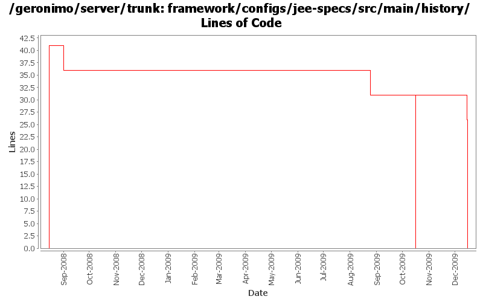

[root]/framework/configs/jee-specs/src/main/history

| Author | Changes | Lines of Code | Lines per Change |
|---|---|---|---|
| Totals | 17 (100.0%) | 154 (100.0%) | 9.0 |
| djencks | 11 (64.7%) | 115 (74.7%) | 10.4 |
| jbohn | 1 (5.9%) | 36 (23.4%) | 36.0 |
| dwoods | 2 (11.8%) | 2 (1.3%) | 1.0 |
| xuhaihong | 1 (5.9%) | 1 (0.6%) | 1.0 |
| rickmcguire | 1 (5.9%) | 0 (0.0%) | 0.0 |
| gawor | 1 (5.9%) | 0 (0.0%) | 0.0 |
remove jee-specs config. not needed anymore
0 lines of code changed in 1 file:
GERONIMO-4970 Remove those specs and impl which are shipped by JRE 1.6
Patch for removing geronimo-ws-metadata_2.0_spec provided by Shiny Cheng.
0 lines of code changed in 1 file:
Use JSP spec version
1 lines of code changed in 1 file:
fix problem in EarConfigBuilder when constructing sub-configurations for wars. Rename DeploymentContext.getBundle to getDependencyBundle to try to make it clearer that it is temporary and not always available. Start updating pluto/console stuff for pluto 2.
1 lines of code changed in 1 file:
GERONIMO-4916 step 2 move sandbox osgi framework into trunk
31 lines of code changed in 1 file:
GERONIMO-4916 step 1 remove old framwork
0 lines of code changed in 1 file:
first pass at updating build to JPA2
1 lines of code changed in 1 file:
Upgrade to ee6 specs for servlet, ejb. Upgrade to jetty 8. Use jpa 1.0 spec labelled 1.0. Don't try to include openwebbeans until it has available snapshots
4 lines of code changed in 1 file:
update other XML files with embedded versions from 2.2-SNAPSHOT to 3.0-SNAPSHOT
1 lines of code changed in 1 file:
GERONIMO-4705 use sun jstl from maven central
1 lines of code changed in 1 file:
GERONIMO-4692 the last few dependencies.xml sorted
2 lines of code changed in 1 file:
GERONIMO-4692 sort dependencies.xml, except for connector-1_6
30 lines of code changed in 1 file:
GERONIMO-4684, GERONIMO-4685 Use our tomcat build, configure tomcat using server.xml. Also includes some spec jar updates including using our jaxb spec jar
3 lines of code changed in 1 file:
GERONIMO-4522 filter dependency history using maven, also switch to maven filtering from velocity for plan filtering
2 lines of code changed in 1 file:
use the servlet_2.5 spec for now
36 lines of code changed in 1 file:
GERONIMO-4239, sort of. Use transitive depenedencies in c-m-p everywhere. This may break stuff.... let me know
0 lines of code changed in 1 file:
GERONIMO-4248 Add dependency history files
41 lines of code changed in 1 file: